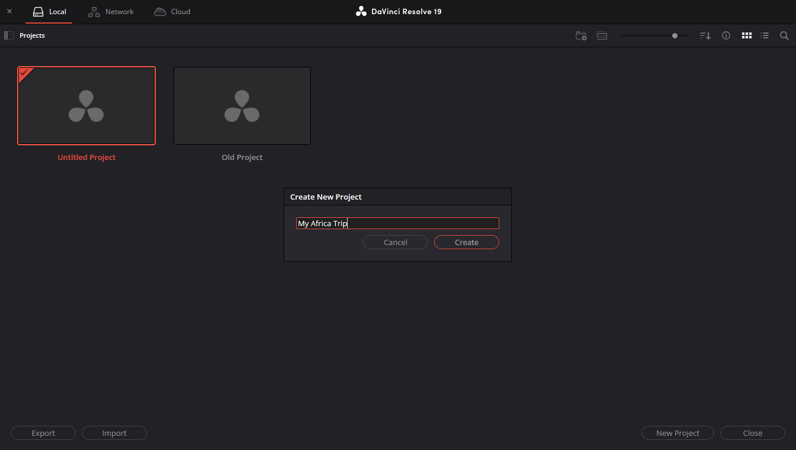
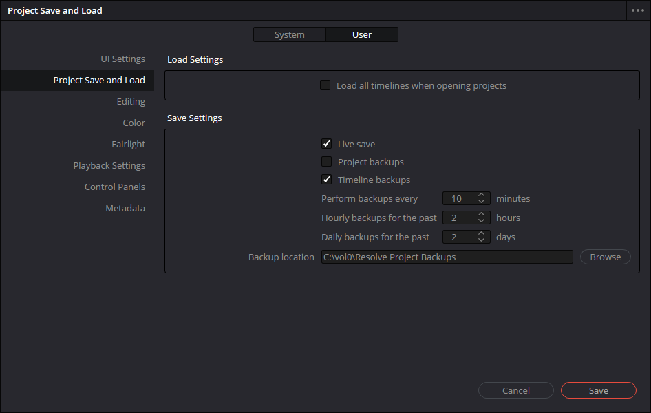

Create and Manage Projects
Overview
Create and manage your projects in DaVinci Resolve. Projects store all media, timelines, and editing work for a video. You can store your projects locally, on a network, or in Blackmagic Cloud.
Procedure: Create a new project
- Start DaVinci Resolve to open the project manager
- Select a storage location from the taskbar (Local, Network, or Blackmagic Cloud)
- Select New Project
- Enter a name for your project, then select Create

Procedure: Create a project from an open project
- Select File > Close Project
- In the Project Manager, select New Project
Procedure: Backup your project files
Enable automatic backups:
- Select DaVinci Resolve > Preferences to open the preferences window
- Select the User tab
- Select Project Save and Load and check Project backups

Manually backup a project:
- Select File > Export project
- Choose your backup location and select Save
Tips
Backup your project folders regularly, especially before making major changes or updating DaVinci Resolve.
A project contains your media, timelines, and editing decisions. Each project is stored separately, allowing you to organize different videos or clients.